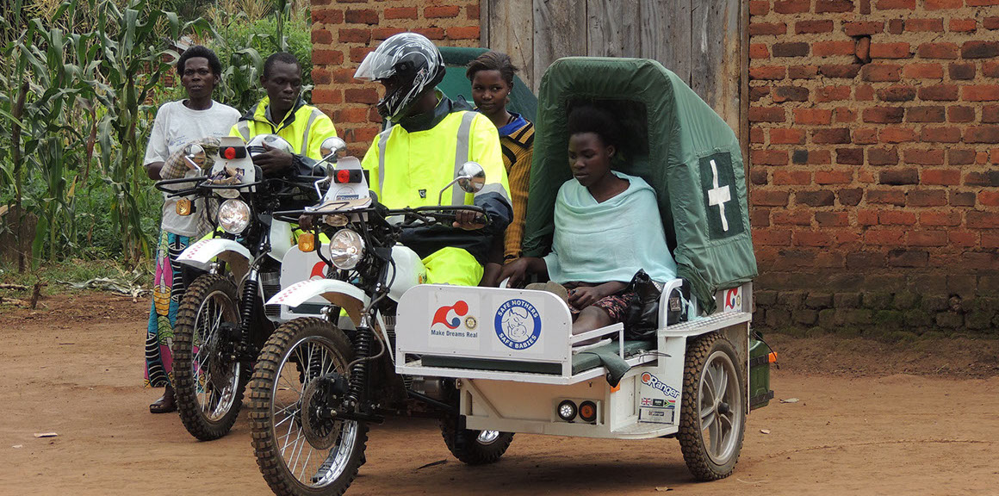
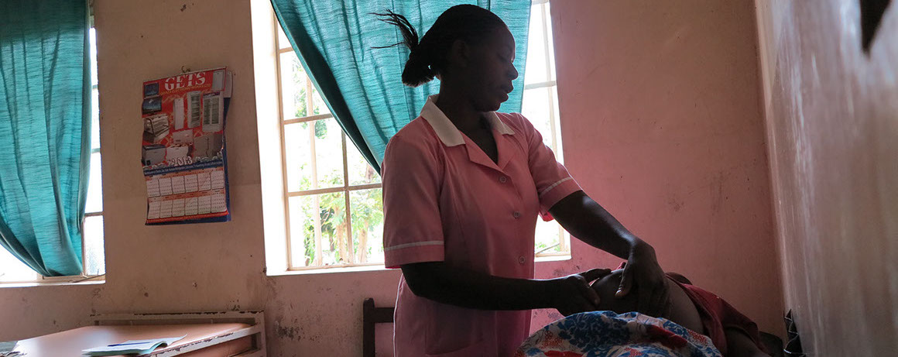
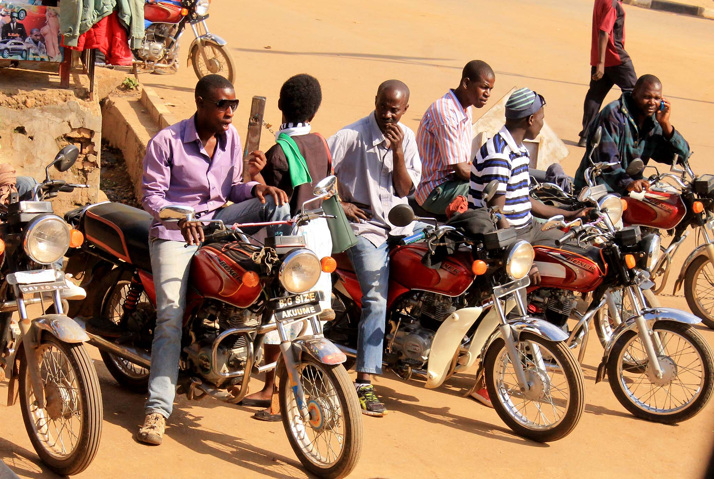

Ride for Life
A Safe Mothers Safe Babies service

SAFE partnered with Ugandan community members and medical professionals to develop a cost-effective solution to the traditional expensive, out-of-the-way, and unreliable transit options to and from health clinics: our motorcycle ambulance system. We provided training in defensive and ambulance driving to volunteers, who now respond to on-demand pickup requess through our app, which also handles a nominal and always transparent fee.
Instead of waiting for a bus that might never come, or walking on foot, you'll be able to call a ride on-demand to take you to a verified clinic. That's trading an hour long walk for a 15 minute motorcycle ride, each way. Meaning not only more rest for you, but also more tie for you to take care of yourself and your family.
We verify each of the clinics before making them availble on the app, so you never have to worry about the available equipment, staff availability or even clinician skill level. Our health providers are our partners: we provide them with training and also undergo training ourselves to understand the Ugandan healthcare market.
In the same way we verify our health clinics, we make sure every boda boda driver who creates a profile experiences defensive and ambulance driving training. We also make all driver ratings public, and remove drivers if they're rating drops below a certain level or if we receive complaints, though that does not happen often.